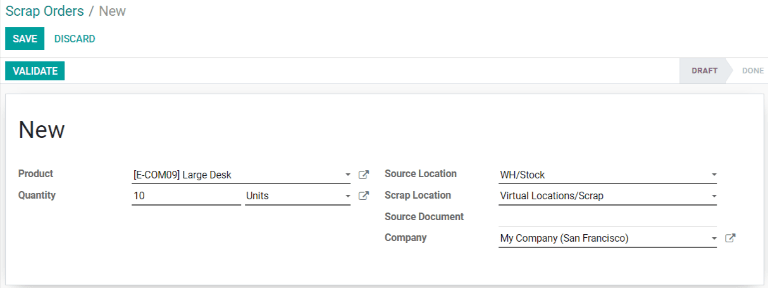

Desechar inventario¶
En algunos casos, es posible que un producto en el inventario esté dañado o defectuoso. Si no es posible reparar o devolver el producto, la aplicación Inventario de Odoo permite que los usuarios lo desechen para garantizar que el número de productos que sí se pueden usar sea el correcto.
Truco
Puede ver las órdenes de desecho en . Cada orden de desecho muestra la fecha y la hora en la que se creó la orden, junto con el producto y la cantidad desechada.
Para ver la cantidad total de cada elemento desechado, vaya a . Elimine el filtro Interno de la barra Buscar… para que aparezcan las ubicaciones virtuales. Por último, seleccione la ubicación con el nombre Ubicaciones virtuales/Desechos.
De manera predeterminada, al desechar un producto, este se elimina del inventario físico y se coloca en una ubicación virtual que recibe el nombre de Ubicaciones virtuales/Desechos. Una ubicación virtual no es un espacio físico, es una denominación de Odoo que se usa para rastrear elementos que ya no están disponibles en el inventario físico.
Más información
Para obtener más información acerca de las ubicaciones virtuales, consulte la documentación sobre los distintos tipos de ubicaciones.
Desechar de las existencias¶
Para desechar un producto que se ubica en el inventario, vaya a . En la página Órdenes de desecho, haga clic en Nuevo para configurar una nueva orden para desechar.
En la orden de desechos, seleccione el producto que desea desechar en el menú desplegable Producto e introduzca la cantidad en el campo correspondiente. El valor predeterminado en la ubicación de origen es la ubicación donde se almacena el producto y el valor predeterminado de la ubicación de deshecho es Ubicaciones virtuales/Desechos, pero puede cambiar cualquiera de estos si selecciona una ubicación distinta desde sus menús desplegables.
Por último, haga clic en Validar para desechar el producto. El número de inventario disponible del producto desechado se actualiza y resta la cantidad desechada.
Desechar en una recepción, traslado o entrega¶
También puede desechar productos durante las operaciones de recepción, traslado y entrega. Puede ser necesario si descubre que algún producto es defectuoso al recibirlo en el inventario, trasladarlo de un lugar a otro o prepararlo para su entrega.
Para desechar un producto durante las operaciones de recepción, traslado o entrega, vaya a la aplicación . En la página Información general, seleccione el botón # POR PROCESAR en las tarjetas Recibidos, Traslados internos u Órdenes de entrega, según el tipo de operación desde la cual desea desechar el producto.
Nota
Para que la tarjeta Traslados internos aparezca en la página de Información general de la aplicación , debe habilitar los ajustes de Ubicaciones de almacenamiento. Vaya a , luego habilite la casilla junto a Ubicaciones de almacenamiento que se encuentra dentro de la categoría Almacén.
Hay otra opción para visualizar la lista con todas las órdenes de entrega, recepción y traslado. Vaya a .
Luego, haga clic en una orden de entrega, recepción o traslado desde la página correspondiente para abrirla. El botón Desechar aparece en la parte superior de la página, haga clic en él para abrir la ventana emergente correspondiente.
Importante
El botón Desechar solo aparecerá en una recepción que ya esté validada. Esto se debe a que Odoo solo permite desechar los productos una vez que están dentro del inventario.
En la ventana emergente de desechos, seleccione el producto a desechar en el menú desplegable correspondiente. Luego, ingrese el número en el campo Cantidad.
El valor predeterminado en la ubicación de origen es la ubicación donde se almacena el producto y el valor predeterminado de la ubicación de deshecho es Ubicaciones virtuales/Desechos, pero puede cambiar cualquiera de estos si selecciona una ubicación distinta desde sus menús desplegables.
Por último, haga clic en Hecho para desechar el producto. Después de hacerlo, la ventana emergente de desechos se cierra en automático y aparece el botón inteligente Desechar en la parte superior derecha de la página. Haga clic en él para ver todas las órdenes de desechos que se crearon desde esa operación.